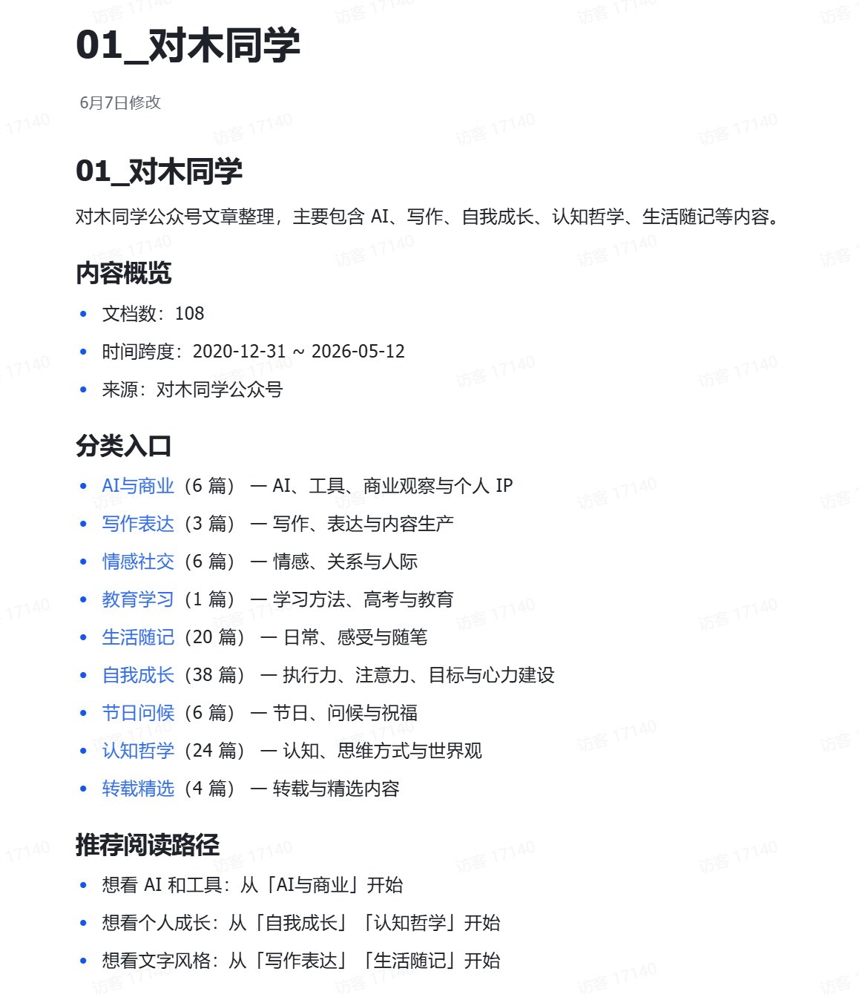
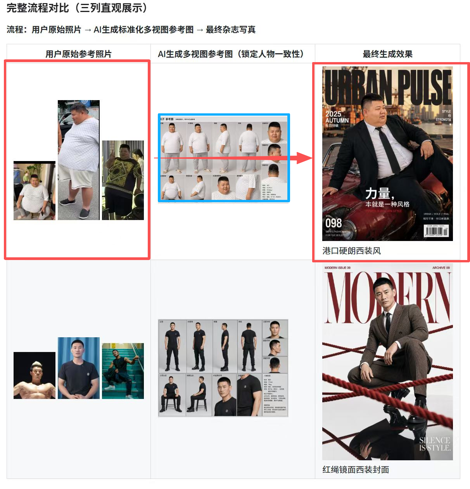

FIRST EDUCATION
FIRST EDUCATION — LOADING
全国最大的大学生AI社群
FIRST EDUCATION · STUDENT AI ARCHIVE
GUIDE — 使用指南
树成林 · 学生使用指南
以下,全部标准化交付。
- 01 顶级审美的网站 任何一个学生,给你一个能上线的网站 → 02 作品
- 02 个性写真 没有摄影师,整本杂志级写真 → 01 写真
- 03 一键产出视频 AI 生视频 / AI 代码视频,两条流水线 → 03 视频
- 04 微信转录与需求分析 零散聊天,变成需求单 → 技能 · 案例
- 05 剪辑工具与一键出片 口播素材进,成片出 → 技能 · 案例
- 06 小红书采集与选题 关键词进去,选题库出来 → 技能 · 案例
- 07 知识库与内容沉淀 一堆资料,长成分类好的案例库 → 技能 · 案例
- 08 整首成歌 / 海报 / 文案 词曲、合辑海报、公众号长文,一句话起稿 → 技能 · 案例
- 09 调研 · 访谈 · 再造新技能 市场调研、访谈提纲、论文级长文;缺什么,造什么 → 技能 · 详解
标准化生产。 顶级交付。
网站、视频、写真、歌。每一件,都是用 AI 当场做出来的。
02 — 作品
我们对网站的顶级审美。
每件都挂着当时那句指令,点开就是正在运行的页面。
HOVER · TYPE ANY LETTER
02 — 作品 · INDEX
HOVER TO PREVIEW
PCCB CERAMIC · FIVE DRIVE MODES
887 PS · 2.6 S · 345 KM/H
676 帧 · 单文件 · 滚轮往下,车会动


03 — 视频 · VIDEO MATRIX
视频矩阵
AI 生视频 / AI 代码视频 — 黑场放映室 · 网页即放映机
04 — 局部作品库 · SELECTED WORKS
局部作品库。
- 01
25IP 端到端复刻
IP 从策划到成片,全流程复刻 · 端到端交付
- 02
53 个案例参考库
案例逐条入库,分类可检索,随取随用
- 03
直播「AI时代」封面设计
直播主视觉,当晚上线
- 04
AI 智能剪辑口播视频
口播素材进,成片出 · 竖屏实录 1:21
- 05
IP 全平台知识库
全平台内容沉淀成一座可检索的库
每件:标准流程 + 素材 → 交付。流程文档,待补录。
05 — 档案 · RAW ARCHIVE
素材河
精选成品顺流而下 · 全部走同一条产线
06 — 技能 · SKILLS
悬停翻面 · 点击定位
SKILLS · 标准化调用
技能
01
数据 · 选题调研
关键词进去,
选题库出来。
从「婚恋法律」一个关键词开始,自动翻页、自动采集小红书爆款笔记,整理成能直接用的选题库。选题,从「猜」变成有依据地选。
婚恋法律 → 爆款标题库 + 选题参考 一套
02
微信 · 需求分析
零散的聊天,
变成需求单。
把微信群聊导出给 Agent,去重、提炼、归并需求,产出飞书日报卡片和下一步行动。装好就能用:可对话的飞书 Bot,部署即交付。
群聊 78 条 → 精华 38 条 · 压缩 51%

03
知识库 · 内容沉淀
一堆资料,
长成分类好的案例库。
108 篇公众号文章逐篇读取、自动归档,长成分类好的飞书知识库,带检索入口和推荐阅读路径。每一类,点进去就是原文。
公众号 108 篇 → 自动分成 9 类 + 检索入口
04
视频 · 智能剪辑
一段口播,
剪辑前后两个样子。
同一段口播素材交给智能剪辑:字幕、花字、节奏一次到位。左边是拍完的原素材,右边是直接能发的成片。
口播素材 1:22 → 成片 0:28

05
做图 · 工作流
人工只做两步。
把同一个人的照片放进一个文件夹,发一句固定指令。多视图生成、出图、存档,全部后台自动完成。全程不写提示词。
照片一夹 + 指令一句 → 杂志级人像一组
SUNO-SONG-CREATOR · TRACK 01
Orbiting
the Unknown
词 · 曲 · 编 · 唱 — 全部 AI 生成
06
音乐 · 整首成歌
一个主题,
整首能听的歌。
词、曲、编、唱,全部 AI 生成。给一个主题,拿到一首能直接播放的原创歌。
一个主题 → 《Orbiting the Unknown》· 词曲编唱全 AI
INDEX — 技能详解
没上大屏的,一样按标准干活。
- 做什么
- 按固定流程,生成一个完整网页
- 给什么
- 可直接打开的 HTML,排版动效配好
- 价值
- 不养前端,当天也能上线一个页面
- 做什么
- 把「要好看」翻译成具体的设计决策
- 给什么
- 页面结构、配色、字距,一次给齐
- 价值
- 拿出去的页面,不用再请人返工
- 做什么
- 把做好的页面推上公网
- 给什么
- 一条能发给任何人的正式链接
- 价值
- 从「做完了」到「别人能打开」,几分钟
- 做什么
- 一段口播音频,直接驱动成片
- 给什么
- 带字幕、能直接发布的竖屏视频
- 价值
- 口播内容不等剪辑师,录完就能发
- 做什么
- 对着一个产品写整页销售文案
- 给什么
- 卖点、结构、行动话术齐全的落地页文案
- 价值
- 新品上架当天,就有能转化的页面
- 做什么
- 把一个观点展开成完整长文
- 给什么
- 结构清晰、可直接发布的文章
- 价值
- 想法不过夜,当天变成对外内容
- 做什么
- 围绕一个关键词,写能被搜到的文章
- 给什么
- 标题、结构、关键词布局齐全的稿件
- 价值
- 不投广告,搜索也持续有人找进来
- 做什么
- 一条内容,改写成各平台的版本
- 给什么
- 小红书、公众号、微博,各一份帖子
- 价值
- 一次创作全渠道铺开,不逐个重写
- 做什么
- 按学术规范组织一个题目
- 给什么
- 结构、引用、格式合规的初稿
- 价值
- 白皮书、行业报告,有了规范底稿
- 做什么
- 把一个模糊想法逼问成明确方案
- 给什么
- 目标、路径、取舍,一页清单
- 价值
- 会还没开,方案已经有草案
- 做什么
- 摸清一个市场的盘子与缺口
- 给什么
- 规模、竞品、机会点的调研报告
- 价值
- 进不进场,用数据拍板
- 做什么
- 对着一份简历,设计一场面试
- 给什么
- 结构化问题清单与评估维度
- 价值
- 招人不凭眼缘,每轮都问在点上
- 做什么
- 把重复流程封装成新的 skill
- 给什么
- 可安装、可复用的能力包
- 价值
- 今天缺的能力,明天是清单里的新条目
ST — 标准 · STANDARDS
标准化生产。
四条产线标准,贯穿每一件交付。
- 01
部署流程,标准化
从源码到上线,一条固定产线,谁来跑都一样
- 02
能力输出,标准化
每个学生的交付,有明确的保底水准
- 03
对接流程,标准化
从需求到交付,节点固定、流程可复制
- 04
企业落地,自动化
工作流装进企业,标准运转,不依赖个人


07 — 终幕 · TO BE CONTINUED
标准化生产,顶级交付。
精选 · 还在涨
树成林 · 欢迎加入我们